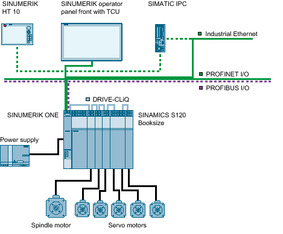

Configuring a milling machine

Dashed lines | Optional connections |
Sample configuration
First commissioning is performed using the example of the system configuration shown:
Preparing a drive system Automatic initial commissioning Configuring the infeed Configuring the axis/spindle Additional axes are to be configured in a manner similar to the procedure described. Axis assignment
|